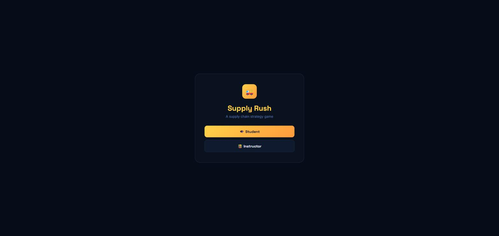
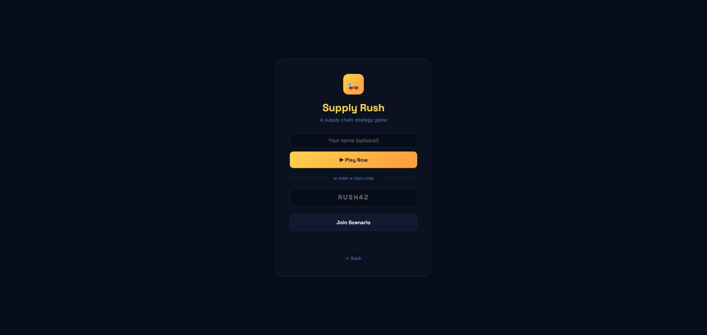
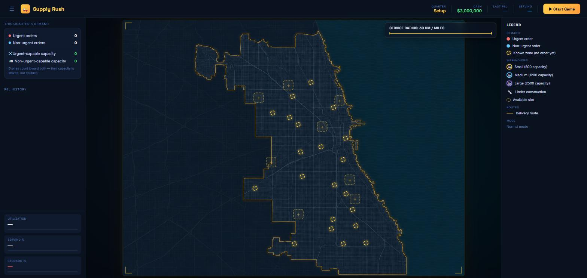
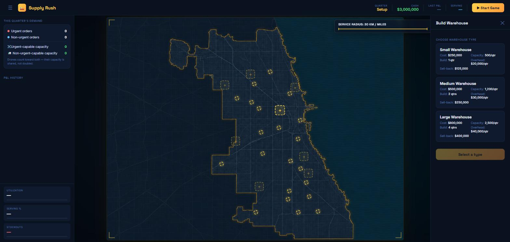
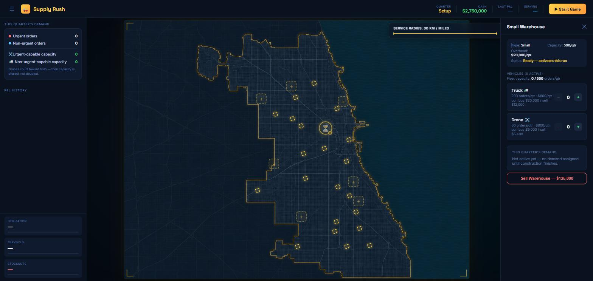
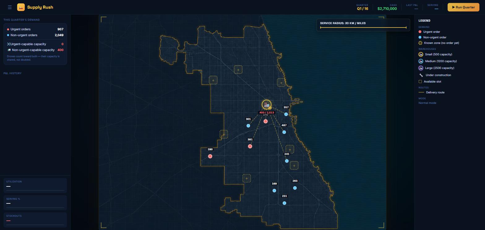
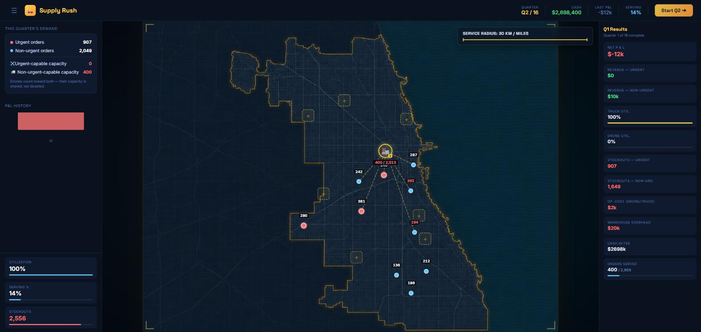
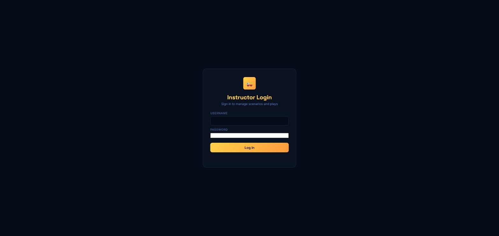

What the game is, how a student plays it, and how an instructor runs a class on it.
Supply Rush is a browser-based supply chain management simulation built for classroom use. A student runs a fictional last-mile delivery company over a Chicago map: build warehouses, buy delivery vehicles, and try to profitably meet customer demand quarter after quarter, while an instructor can shape the scenario's economics and even script real-world-style disruptions into specific quarters.
It's played entirely in the browser — no install for students. An instructor creates a scenario (a full configuration of prices, budgets, map, disruption rules, etc.), gets a short class code, and shares it with the class.

The landing screen offers exactly two paths:
Play solo with default settings, or join a class using an instructor's code. May need to verify a school email first, depending on how the instructor configured things.
Log in with instructor credentials to create/manage scenarios, generate class codes, and watch every group's progress in real time.

After tapping Student, there are two options:
Some classes require every student to verify a school email with a one-time 6-digit code before playing. If so, this screen appears the moment a mode is chosen — before the play is actually created, so the resulting session is tied to that email from the start. If a student already verified earlier in the same browser session, this step is skipped automatically, and the student screen shows “Signed in as <name>” with a link to sign in as someone else — important on a shared classroom computer where several students take turns.
Every play starts in a Setup phase — no demand yet, just a chance to plant an opening warehouse (or several) before quarter 1 actually runs. Tap any dashed "+" slot on the map to open the build panel.



Hitting Start Game (Setup) or Run Quarter (every quarter after) simulates one quarter: demand is generated, fulfilled as far as capacity allows, revenue and costs are booked, and cash updates. The map shows live demand pins and delivery routes before running.


This repeats for every quarter in the scenario (commonly 12–20). Along the way, a student can buy/sell more warehouses and vehicles, and — if the instructor enabled it — outsource specific demand zones to a third party (see §6).
After the last quarter, a summary screen shows the full run: cash trajectory, revenue vs. spending, capacity vs. demand, fulfillment rates, and utilization — charted over every quarter played.
Three sizes, each an instructor-tunable tradeoff between cost, capacity, and how long it takes to come online:
| Type | Default Cost | Capacity/qtr | Build Time | Overhead/qtr |
|---|---|---|---|---|
| Small | $250,000 | 500 orders | 1 quarter | $20,000 |
| Medium | $500,000 | 1,200 orders | 2 quarters | $30,000 |
| Large | $800,000 | 2,500 orders | 4 quarters | $40,000 |
A warehouse under construction shows a wrench icon and serves no demand until it finishes. Overhead is charged every quarter it's active, whether or not it ships anything — an idle warehouse still costs money.
Vehicles live inside a warehouse and are what actually deliver orders — capacity is capped by the smaller of "warehouse capacity" and "total vehicle capacity assigned to it."
| Type | Default Cost | Capacity/qtr | Op. Cost/qtr | Serves |
|---|---|---|---|---|
| 🚛 Truck | $20,000 | 200 orders | $800 | Non-urgent only |
| ✈️ Drone | $9,000 | 60 orders | $800 | Urgent + non-urgent |
Drones are the only vehicle that can serve urgent orders by default — a common early strategic tension between cheap truck capacity and flexible-but-pricier drone capacity.
Each quarter, a set of map zones generates urgent and non-urgent orders. Not every zone is visible from the start — a scenario reveals more zones progressively as the game goes on, so the map genuinely grows over a run. Demand a warehouse can't reach (out of its service radius) or doesn't have spare capacity for goes unfulfilled — a stockout.
Revenue = fulfilled orders × price-per-order (urgent pays more). Costs = every active vehicle's operating cost + every active warehouse's overhead + any outsourcing fees. Profit rolls straight into cash — there's no loan mechanic, so cash can go negative if a student overspends relative to what they can actually deliver; the UI locks further actions until the debt is resolved.
An instructor can layer unpredictable shocks onto a scenario — off by default. Three kinds:
Cuts one specific warehouse's effective capacity for a quarter.
Cuts every drone's capacity fleet-wide for a quarter.
Raises every truck's operating cost for a quarter.
Each can either fire randomly (instructor sets a per-quarter probability and severity range — every group under the same class code sees the identical roll, so it's fair) or be pinned by the instructor to an exact quarter at an exact severity, guaranteeing a specific case-study beat happens.
Whenever a quarter with a fired disruption starts, a small popup appears on screen for a few seconds so no group misses it — it's also listed persistently in the sidebar's Disruption Forecast.
If a scenario allows it, a student can toggle any individual demand zone to be handled by a third-party carrier instead of their own fleet. Outsourced zones are always 100% fulfilled instantly at a configured cost-per-order, completely bypassing warehouse/vehicle capacity — useful for covering a gap the student's own network can't reach, at a price. A zone stays outsourced until toggled back off.

After logging in, the dashboard has three sections:
An instructor can set an unlocked quarter ceiling on a scenario — once turned on, no group can run a quarter past whatever's been released, keeping the whole class in lockstep (e.g. everyone stops at Q4 for a mid-game discussion). Students see a simply-disabled Run Quarter button with a lock icon, not an error.
| Term | Meaning |
|---|---|
| Scenario | An instructor's full configuration — prices, budget, map, disruption rules. Has a shareable code. |
| Play | One student's actual game session under a scenario — their own warehouses, cash, and history. |
| Quarter | One simulated time step. Quarter 0 is setup-only; the real game runs quarters 1..N. |
| Stockout | Demand that went unfulfilled that quarter — no capacity/reach to serve it. |
| Utilization | How much of available fleet capacity was actually used. |
| Serving % | Share of total demand actually fulfilled. |